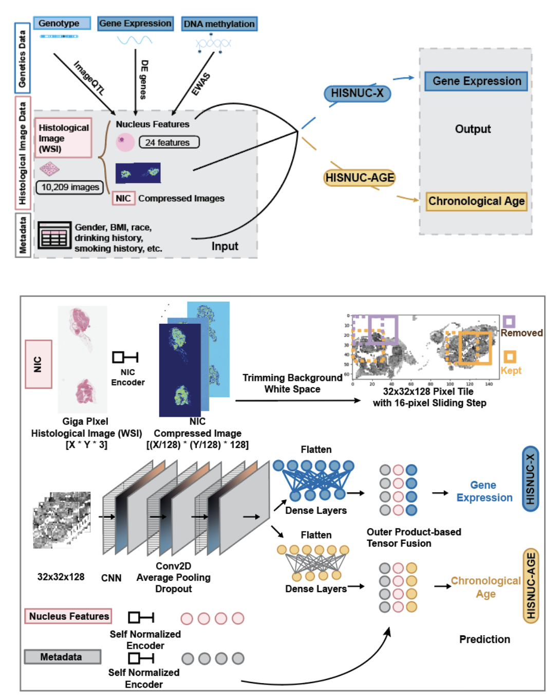
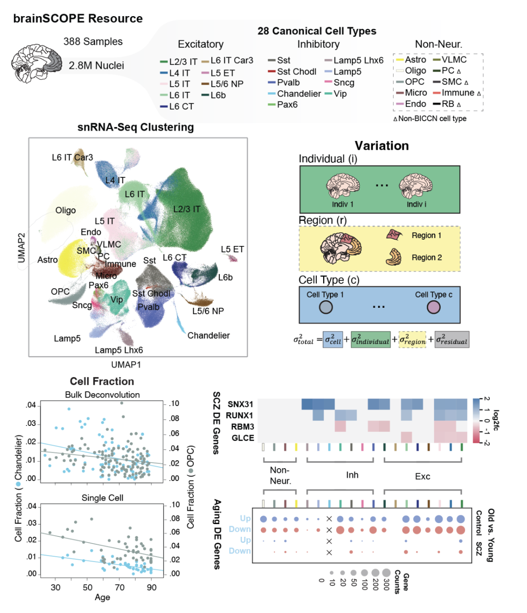

Histology–Genomics Integration
We develop statistical and deep-learning frameworks that link histological image features (including nuclear morphology, tissue texture, and cellular organization) to genotype, transcriptome, and chronological age. This approach has identified novel imageQTLs and demonstrated that age can be predicted directly from tissue morphology.

Single-Cell Multi-Omics & Brain Genomics
We investigate cell-type–specific gene regulation in the human brain, with a focus on psychiatric disorders and aging. Our work on the PsychENCODE Cornerstone Project analyzed over 2.8 million nuclei from 388 human prefrontal cortex samples, uncovering molecular mechanisms of schizophrenia, autism, and bipolar disorder.

Infectious Disease Biology & Public Health
Building on our imaging-genomics expertise, we develop AI-driven frameworks connecting histological morphology with pathogen genomics and spatial transcriptomics. In partnership with the NYS Department of Health and the Wadsworth Center, we enable scalable analysis of infection-associated tissue compartments and real-time outbreak surveillance.